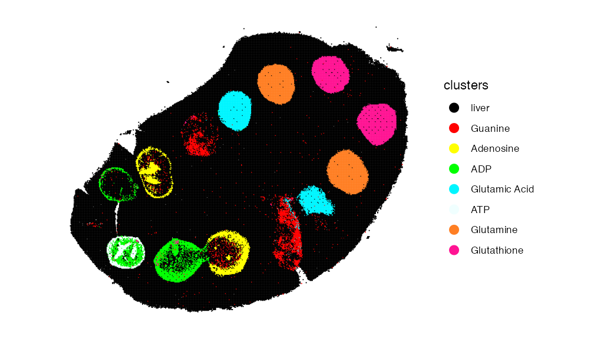
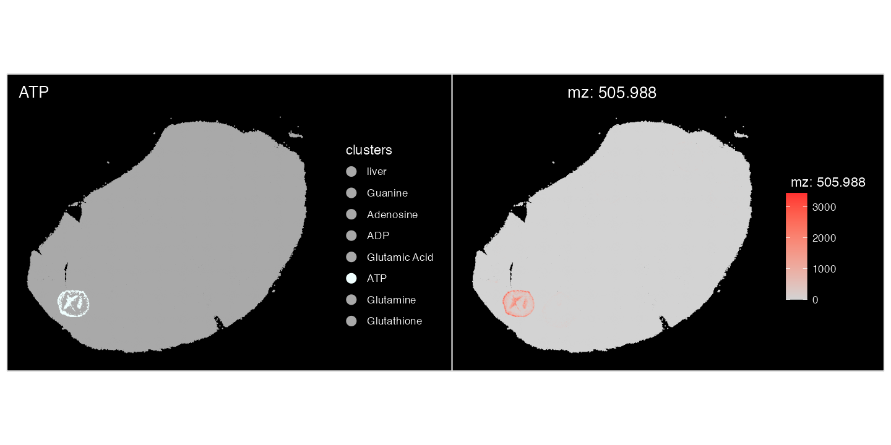
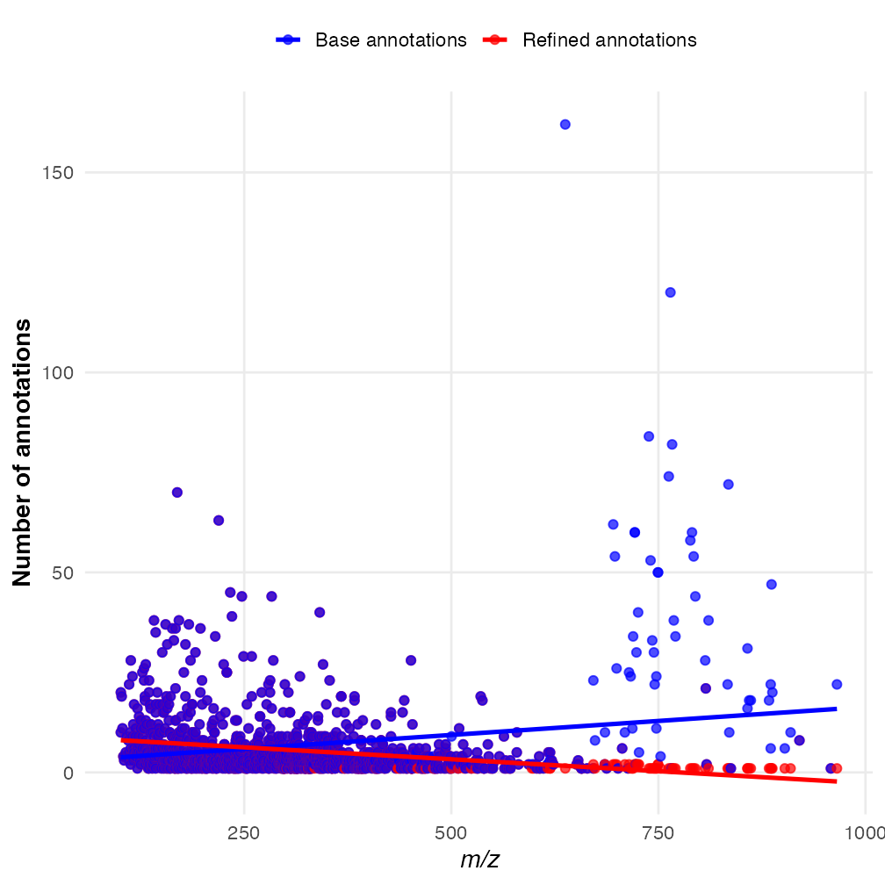

SpaMTP: Refinning Metabolite Annotations
Source:vignettes/Annotation_Refinement.Rmd
Annotation_Refinement.RmdRefinning m/z Metabolite Annotations with SpaMTP
This tutorial highlights how to use SpaMTP to refine m/z annotated with multiple metabolites. SpaMTP implements this in 4 different ways, with these functions:
- CalculateAnnotationStatistics
- RefineLipids
- Pseudo_msms
- Compare_msms
We will visit each in detail below.
Author: Andrew Causer
Install and Import R Libraries
First we need to import the required libraries for this analysis.
## Install SpaMTP if not previously installed
if (!require("SpaMTP"))
devtools::install_github("GenomicsMachineLearning/SpaMTP")
#General Libraries
library(SpaMTP)
library(Cardinal)
library(Seurat)
library(dplyr)
library(tidyr)
#For plotting + DE plots
library(ggplot2)
library(EnhancedVolcano)
library(viridis)1) Pathway-Based Refinement:
CalculateAnnotationStatistics
This function uses correlations in pathway expression (Metabolite only, Gene only or Multi Omic based pathway information) to refine metabolite annotation. Specifically, for each annotated metabolite, the expression profiles for all known pathways associated with this metabolite are calculated. Based on spatial colocalisation between relative pathways and the given m/z mass, each metabolite is then ranked based on Pearson correlation values and the number of significant pathways associated with that metabolite.
Below we will use a public mouse liver dataset with spotted chemicals standards to demonstrate this:
spotted <- readRDS(url("https://zenodo.org/records/17289187/files/spotted_Annotated_H_Cl_Adducts.RDS?download=1"))
spotted## An object of class Seurat
## 1303 features across 109390 samples within 1 assay
## Active assay: Spatial (1303 features, 0 variable features)
## 1 layer present: counts
## 1 spatial field of view present: fovHere we have a SpaMTP Seurat object that is already processed, with m/z annotated. Meaning we have 1303 annotated m/z values. This dataset includes certain chemical compounds which were ‘spiked-in’ at known locations. We will plot these below:
metabolite_colors <- list("ATP" = "azure","ADP" = "green","Adenosine" = "yellow", "Guanine" = "red","Glutamic Acid" = "turquoise1", "Glutamine" = "chocolate1","Glutathione" = "deeppink","liver" = "black")
ImageDimPlot(spotted, group.by = "clusters", cols = metabolite_colors, dark.background = F)
The plot highlights the location of each known metabolite. However,
due to the inherent issue of mass spectrometry imaging data one m/z mass
may be associated with multiple possible metabolites. For example
adenosine triphosphate or ATP was spiked-in to the second set
of wells within the liver (green). When we look at the annotation of
ATP, we can see for m/z-505.988470137 there are 4 different
annotations, one of which is ATP.
SearchAnnotations(spotted, metabolite = "Adenosine triphosphate", search.exact = T)## raw_mz mz_names observed_mz
## 1162 505.9885 mz-505.988470137 505.9885
## all_IsomerNames
## 1162 Adenosine triphosphate; dGTP; 2-hydroxy-dATP; [[(2R,5R)-5-(6-Aminopurin-9-yl)-3,4-dihydroxyoxolan-2-yl]methoxy-hydroxyphosphoryl] phosphono hydrogen phosphate
## all_Isomers
## 1162 HMDB0000538; HMDB0001440; HMDB0059593; HMDB0257997
## all_Isomers_IDs
## 1162 hmdb:HMDB0000538; hmdb:HMDB0001440; hmdb:HMDB0059593; hmdb:HMDB0257997
## all_Adducts all_Formulas all_Errors
## 1162 M-H C10H16N5O13P3 0.0019Plotting this m/z value spatially, it localises completely within the ATP spiked-in region.
ImageDimPlot(spotted, group.by = "clusters", cols = setNames(
ifelse(names(metabolite_colors) == "ATP", "azure", "darkgrey"),names(metabolite_colors)
))+ ggtitle("ATP")| ImageMZPlot(spotted, mzs = 505.9885)
This confirms that the correct annotation of
mz-505.988470137 is only ‘ATP’. This is the case with all
other spiked-in chemicals. To refine the annotations based on pathway
correlation we can run SpaMTP’s
CalculateAnnotationStatistics:
## Step 1: Create a pathway assay - This can be done using only metabolites, or can be merged to include genes if applicable
spotted <- CreatePathwayAssay(spotted, analyte_type = "metabolites", assay = "Spatial", new_assay = "SPM_pathway", verbose = T)
## Step 2: Format Pathway Assay
DefaultAssay(spotted) <- "SPM_pathway"
spotted <- NormalizeData(spotted)
spotted <- ScaleData(spotted)
## Step 3: Run CalculateAnnotationStatistics
output <- CalculateAnnotationStatistics(data = spotted, mz.assay = "Spatial",pathway.assay="SPM_pathway", mz.slot = "counts", return.top = FALSE)After running CalculateAnnotationStatistics the output
will be a dataframe containing the most likely annotation for each m/z
value based on correlations with pathway expression. Lets subset this
output to look at our spiked-in metabolites:
output[c(1162,1053,501,626,126,117,251,113,248,637,638,835,836),]| raw_mz | mz_names | metabolite | n_sig_path | max_cor | z_score | pval | pval_adj | original_annotations | |
|---|---|---|---|---|---|---|---|---|---|
| 1162 | 505.9885 | mz-505.988470137 | Adenosine triphosphate | 2381 | 0.8374779 | 1.731981 | 0.0416385 | 0.1249154 | Adenosine triphosphate; dGTP; 2-hydroxy-dATP; [[(2R,5R)-5-(6-Aminopurin-9-yl)-3,4-dihydroxyoxolan-2-yl]methoxy-hydroxyphosphoryl] phosphono hydrogen phosphate |
| 1053 | 426.0221 | mz-426.022139245 | ADP | 3579 | 0.8985871 | 2.541858 | 0.0055132 | 0.0275662 | Adenosine 3’,5’-diphosphate; dGDP; ADP; [(2S,3R,4R,5R)-5-(6-Aminopurin-9-yl)-3,4-dihydroxyoxolan-2-yl]methyl phosphono hydrogen phosphate; Zidovudine diphosphate |
| 501 | 266.0895 | mz-266.089477461 | Adenosine | 104 | 0.9071216 | 3.756311 | 0.0000862 | 0.0006897 | 3’-Azido-3’-deoxythymidine, 98%; 8-Oxo-2’-deoxyadenosine; Adenosine; Deoxyguanosine; Vidarabine; Zidovudine; 9-Arabinofuranosyladenine; Formycin A |
| 626 | 302.0662 | mz-302.066155193 | Adenosine | 104 | 0.8019030 | 4.117214 | 0.0000192 | 0.0001726 | Hpmpa; 3’-Azido-3’-deoxythymidine, 98%; 8-Oxo-2’-deoxyadenosine; Adenosine; Deoxyguanosine; Vidarabine; Zidovudine; 9-Arabinofuranosyladenine; Formycin A |
| 126 | 150.0421 | mz-150.042133345 | Guanine | 42 | 0.6453926 | 3.000000 | 0.0013499 | 0.0053996 | 8-Oxo-7,8-dihydrodeoxyguanine; Guanine; 2-Hydroxyadenine; 8-Hydroxyadenine |
| 117 | 146.0459 | mz-146.045881333 | L-Glutamic acid | 373 | 0.8193504 | 4.792862 | 0.0000008 | 0.0000099 | N-lactoyl-Glycine; 5-Hydroxy-4-oxo-L-norvaline; Alanine acetate; N-Methyl-DL-aspartic acid; L-Glutamic acid; N-Methyl-D-aspartic acid; N-Acetylserine; O-Acetylserine; D-Glutamic acid; L-4-Hydroxyglutamate semialdehyde; 3-(Carboxymethylamino)propanoic acid; DL-Glutamate |
| 251 | 182.0226 | mz-182.022559065 | L-Glutamic acid | 343 | 0.2866179 | 5.439546 | 0.0000000 | 0.0000004 | Fosmidomycin; 2-Amino-4-phosphonobutyric acid; N-lactoyl-Glycine; 5-Hydroxy-4-oxo-L-norvaline; Alanine acetate; N-Methyl-DL-aspartic acid; L-Glutamic acid; N-Methyl-D-aspartic acid; N-Acetylserine; O-Acetylserine; D-Glutamic acid; L-4-Hydroxyglutamate semialdehyde; 3-(Carboxymethylamino)propanoic acid; DL-Glutamate |
| 113 | 145.0619 | mz-145.061865745 | L-Glutamine | 137 | 0.5805269 | 4.103823 | 0.0000203 | 0.0001626 | Alanylglycine; Cyclic Urea; Glycyl-D-Alanine; Glycylsarcosine; D-Alanyl glycine; L-Glutamine; Ureidoisobutyric acid; D-Glutamine; 3-ureido-isobutyrate |
| 248 | 181.0385 | mz-181.038543477 | L-Glutamine | 137 | 0.5005050 | 4.126675 | 0.0000184 | 0.0001472 | Alanylglycine; Cyclic Urea; Glycyl-D-Alanine; Glycylsarcosine; D-Alanyl glycine; L-Glutamine; Ureidoisobutyric acid; D-Glutamine; 3-ureido-isobutyrate |
| 637 | 306.0765 | mz-306.076529999 | Glutathione | 175 | 0.7969612 | 4.082483 | 0.0000223 | 0.0001337 | Glutathione; Glutathionate(1-); Methyl 2-((3,4-dihydro-3,4-dioxo-1-naphthalenyl)amino)benzoate; Hallacridone; Aristolodione; zaprinast |
| 638 | 306.0772 | mz-306.077181461 | Glutathione | 175 | 0.7969960 | 4.082483 | 0.0000223 | 0.0001337 | Glutathione; Glutathionate(1-); Methyl 2-((3,4-dihydro-3,4-dioxo-1-naphthalenyl)amino)benzoate; Hallacridone; Aristolodione; zaprinast |
| 835 | 342.0532 | mz-342.053207731 | Glutathione | 175 | 0.5391956 | 4.082483 | 0.0000223 | 0.0001337 | O-Desmethylindomethacin; Glutathione; Glutathionate(1-); Methyl 2-((3,4-dihydro-3,4-dioxo-1-naphthalenyl)amino)benzoate; Hallacridone; Aristolodione |
| 836 | 342.0539 | mz-342.053859193 | Glutathione | 175 | 0.5441561 | 4.082483 | 0.0000223 | 0.0001337 | O-Desmethylindomethacin; Glutathione; Glutathionate(1-); Methyl 2-((3,4-dihydro-3,4-dioxo-1-naphthalenyl)amino)benzoate; Hallacridone; Aristolodione |
We can see for each spiked-in metabolite the predicted metabolite
with the highest significance in each case corresponded to the spike-in.
This method gives the user higher confidence that the annotations of m/z
value are correct and biologically significant. Note: For large datasets
this function can take a while to run, the function
CalculateSingleAnnotationStatistics can be used instead to
calculate refined annotations for a single m/z value. Please visit the
documentation
for more information.
2) Lipid Nomenchlature Refinement
As described previously in the Spatial Metabolomics Analysis
tutorial, because many different kinds of lipids can share the same
molecular weight, this may results in some m/z values possessing many
possible annotations. The SpaMTP function RefineLipids can
be used to simplify the lipid nomenclature into common lipid categories
and classes, giving more simplified annotations to a level that most SM
datasets are capable of identifying.
### Runs lipid nomenclature simplification on annotations
refined_lipid_annotations <- RefineLipids(spotted@assays$Spatial@meta.data, annotation.column = "all_IsomerNames", lipid_info = "simple")We can count the number of metabolites assigned for each m/z before and after refining the lipid annotations.
## Count original number of annotations per m/z
refined_lipid_annotations <- refined_lipid_annotations %>%
mutate(base_count = sapply(strsplit(all_IsomerNames, ";\\s*"), length))
## Count number of annotations per m/z following lipid simplification
refined_lipid_annotations <- refined_lipid_annotations %>%
mutate(
refined_count = ifelse(
is.na(Lipid.Maps.Category),
base_count,
sapply(strsplit(Lipid.Maps.Category, ";\\s*"), length)
)
)The maximum reduction in annotations was from 161 to 1. This is quite a significant simplification which can help in processing large datasets. Lets visualise the difference between each m/z value below:
# reshape to long format
df_long <- refined_lipid_annotations %>%
select(raw_mz, refined_count, base_count) %>%
pivot_longer(cols = c(refined_count, base_count),
names_to = "Type", values_to = "Count")
# plot
ggplot(df_long, aes(x = raw_mz, y = Count, color = Type)) +
geom_point(size = 2, alpha = 0.7) +
geom_smooth(method = "lm", se = FALSE, size = 1.2) +
scale_color_manual(values = c("refined_count" = "red",
"base_count" = "blue"),
labels = c("Base annotations", "Refined annotations")) +
labs(
x = expression(italic("m/z")),
y = "Number of annotations",
color = ""
) +
theme_minimal(base_size = 14) +
theme(
legend.position = "top",
panel.grid.minor = element_blank(),
axis.title = element_text(face = "bold")
)
We can see the larger m/z values, which correspond mostly to lipids, display the biggest differences following annotation refinement.